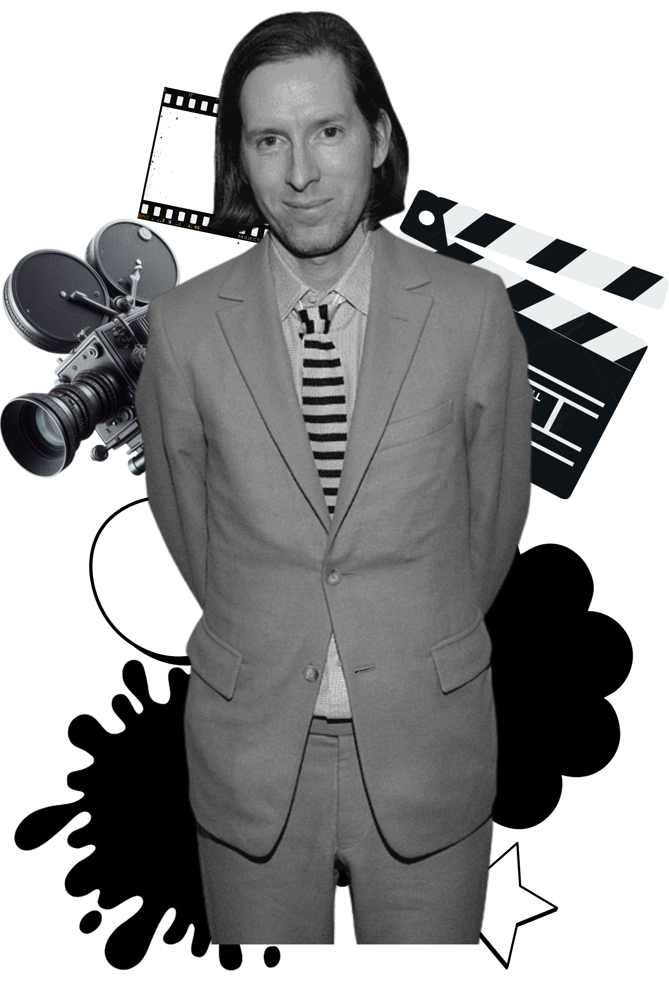
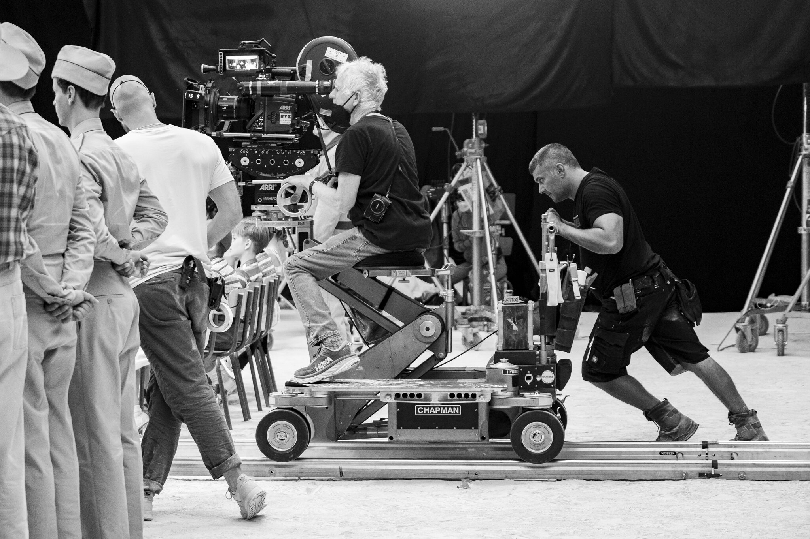

The Cinematic Style of Wes Anderson


Anderson is renowned for using symmetry in his films, which creates a sense of harmony and balance. While pleasant to watch, this kind of composition also contributes to the fanciful, beguiling appearance of his films.In almost every shot there is this symmetry. Those that focus on a single character almost always place them in the centre of the frame, and where there are multiple characters, they often mirror each other on either side of a central point of the composition. This attention to symmetry also helps create a tableau effect, making shots seem nearly two-dimensional and appear like a series of paintings, which is key to creating Anderson’s signature style.
Planimetric composition (when the camera is perpendicular to elements of the scene) is what makes his shots appear two dimensional. Characters generally move horizontally or vertically in relation to these plains and the camera. Anderson also uses compass point editing techniques such as whip pans in 90 degree increments to maintain this composition. The resulting effect? The filmic space looks and feels constructed and the viewer is likely conscious of this fact. The debate here is whether this effectively contributes to the cinematic experience or if it takes the viewer out of the film instead.


Another stand out feature of the Wes Anderson style is colour. Notably, each movie has its own colour palette – usually charming pastel colours. When he does use bright colours, it is in contrast to sad events. This overall exaggerated use of colour creates a world far removed from reality which allows Anderson to get away with more extraordinary plots. Anderson favors soft pinks, pale yellows, and light blues that give his films a vintage, dreamlike quality. Bright reds, deep blues, and earthy greens punctuate scenes, creating contrast and visual balance. His films often balance warm yellows and reds with cooler blues and greens to create a harmonious yet striking aesthetic.